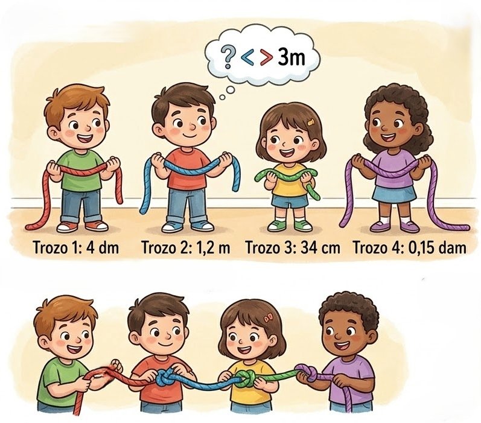
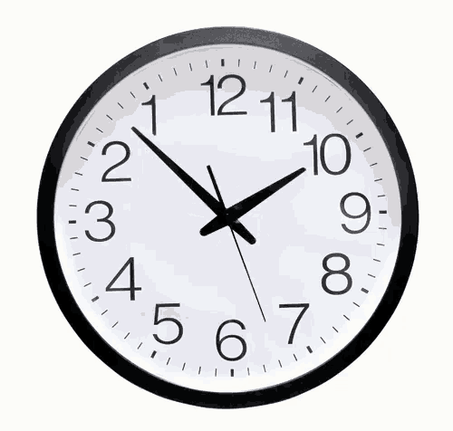

Consejo
Uno de los secretos para resolver un problema en el que intervienen unidades, es siempre pasar todos los datos de la misma magnitud a la misma unidad.
Además, procura elegir una unidad coherente con el contexto. Por ejemplo, si hablamos de distancia entre ciudades no tendría sentido tomar el centímetro, ya que al operar con estas distancias con la calculadora, lo normal es que los resultados nos aparezcan en notación científica, lo que nos podría complicar algo el problema.
Verdadero o falso.
Señala si las siguientes afirmaciones son verdaderas o falsas:
00:00:
Elige.
Vamos a ver si manejas los cambios de unidades de masa, para lo cual vas a resolver un par de cuestiones, eligiendo la respuesta correcta.


Ejercicio resuelto.
Necesitamos una cuerda de al menos 3 metros. Para ello anudamos trozos de distintas cuerdas con las siguientes dimensiones:
Trozo 1: 4 dm
Trozo 2: 1,2 m
Trozo 3: 34 cm
Trozo 4: 0,15 dam
Si por cada nudo perdemos 60 mm (son 3 nudos), ¿conseguiremos llegar a los 3 m?.

Pasemos todo a la misma unidad: metros.
4 dm -> 0,4 m
1,2 m -> 1,2 m
34 cm -> 0,34 m
0,15 dam -> 1,5 m
Que hacen un total de 3,44 metros.
Se sabe que perdemos 60 mm por cada nudo, luego en total perdemos 3·60= 180 mm = 0,18 m.
En total la cuerda anudada es de 3,26 metros.
Ejercicio resuelto.
En un remolque llevamos una carga de 3 toneladas y 9 quintales. Expresa dicha carga en kilogramos.
3 toneladas=3·1000= 3000 kg
9 quintales= 9·100=900 kg
En total la carga es de 3 900 kg
Ejercicio resuelto.
|
Expresa en segundos: a) 20 minutos b) 3 horas c) 1 día |
 |
a) 20·60=1 200 s
b) 3·60= 180 min ⇒ 180·60 =10 800 s
c) 24·60= 1 440 min ⇒ 1 440·60 = 86 400 s